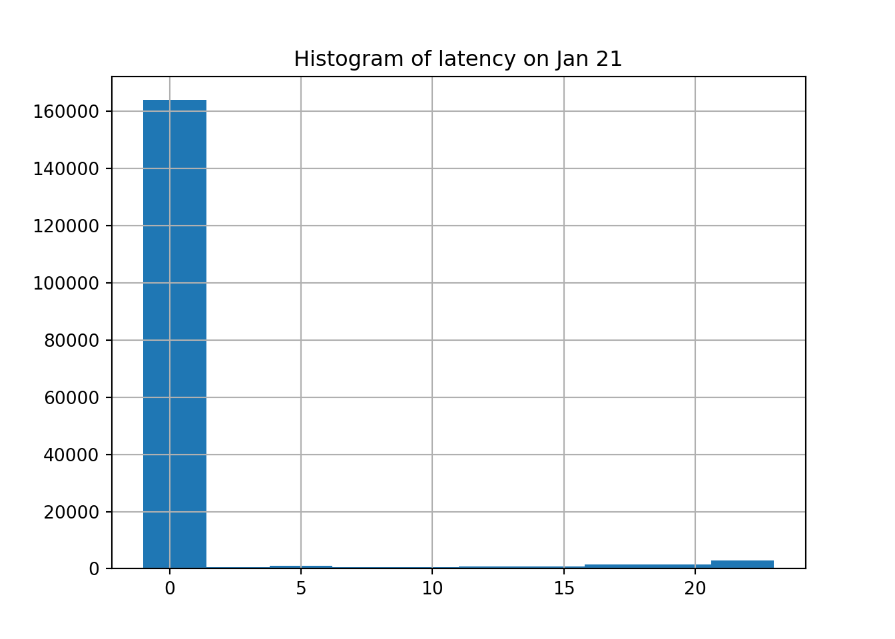

Note: 이 페이지는 키움 API를 통해 Real Time Tick Data를 받아온 후 데이터를 클리닝 하는 과정을 보여주고 있습니다. 오류 및 문의사항은 metrics@kakao.com 으로 메일주시면 감사하겠습니다
데이터 자체에 대한 질문과 데이터 제공에 관한 문의는 000 으로 메일 주시면 감사하겠습니다
R code 블럭과 Python code 블럭은 다음과 같이 색깔로 구분하겠습니다. 결과창은 동일하게 Ivory 색 블럭으로 표시됩니다.
# "이것은 R 코드 입니다."# "이것은 Python 코드 입니다."library(dplyr)
library(tidyverse)
library(DT)
library(reticulate) # Python
#py_install(packages = "matplotlib")
#py_install(packages = "pandas")
#py_install(packages = 'dfply')
options(scipen=999)
options(max.print = 99999999)
options(digits=10)Import Data
Check NA
#wd = "G:/공유 드라이브/Project_TBD/Stock_Data/real_time/kiwoom_stocks/2021-01-14"
wd2 = "/Volumes/GoogleDrive/공유 드라이브/Project_TBD/Stock_Data/real_time/kiwoom_stocks/2021-01-21"
fn = list.files(path = wd2,
pattern = '.*stocks_trade.*\\.csv') # 마지막 30분 틱데이터 가지고오기
# data = readr::read_csv(file = path,
# col_names = c('code','trade_date','timestamp','price','open','high','low',
# 'size','cum_size','ask1','bid1'))
tbl =
list.files(path = wd2, pattern = '.*stocks_trade.*\\.csv')[2:4] %>%
map_df(~readr::read_csv(paste(wd2,.,sep = '/'),
col_names = c('code','trade_date','timestamp','price','open','high','low','size','cum_size','ask1','bid1','rotation','bs_ration', 'mkt_type', 'mkt_cap'),
col_types = cols(.default="d", code = "c")
)
)
sum(is.na(tbl))## [1] 0import numpy as np
import matplotlib.pyplot as plt
import pandas as pd
from datetime import datetime, timedelta
#py_install(packages = "matplotlib")
#py_install(packages = "pandas")
pd.options.display.float_format = '{:.4f}'.format
pd.set_option('display.max_rows', 100)
df_py = r.tbl
df_py.head()## code trade_date timestamp ... bs_ration mkt_type mkt_cap
## 0 279540 90000.0000 20210121090000.2734 ... 0.0000 2.0000 153.0000
## 1 057540 90001.0000 20210121090000.3789 ... 0.0000 2.0000 1152.0000
## 2 264850 90001.0000 20210121090000.3945 ... 0.0000 2.0000 664.0000
## 3 318000 90001.0000 20210121090000.5078 ... 500.0000 2.0000 698.0000
## 4 171120 90001.0000 20210121090000.5078 ... 500.0000 2.0000 1455.0000
##
## [5 rows x 15 columns]ss = df_py[df_py.code == '005930'].reset_index(drop=True)
ss.shape## (82062, 15)Delete rows where “second” does not lie between 0 and 59.
Substring the timstamp to get each time component.
ss = ss[ss['timestamp'].apply(lambda x: int(str(int(x*1000000))[12:14])) < 60 ]
ss = ss.assign( microsecond = ss['timestamp'].apply(lambda x: str(int(x*1000000))[14:20]),
second = ss['timestamp'].apply(lambda x: str(int(x*1000000))[12:14]),
minute = ss['timestamp'].apply(lambda x: str(int(x*1000000))[10:12]),
hour = ss['timestamp'].apply(lambda x: str(int(x*1000000))[8:10]),
day = ss['timestamp'].apply(lambda x: str(int(x*1000000))[6:8]),
month = ss['timestamp'].apply(lambda x: str(int(x*1000000))[4:6]),
year = ss['timestamp'].apply(lambda x: str(int(x*1000000))[0:4]),
kw_time = ss['trade_date'].apply(lambda x: str(int(x))))
ss.head()## code trade_date timestamp price ... day month year kw_time
## 0 005930 90010.0000 20210121090009.6133 87500.0000 ... 21 01 2021 90010
## 1 005930 90010.0000 20210121090010.0156 87500.0000 ... 21 01 2021 90010
## 2 005930 90010.0000 20210121090010.2852 87600.0000 ... 21 01 2021 90010
## 3 005930 90010.0000 20210121090010.3125 87600.0000 ... 21 01 2021 90010
## 4 005930 90010.0000 20210121090009.6133 87500.0000 ... 21 01 2021 90010
##
## [5 rows x 23 columns]ss['lc_time'] = ss.apply(lambda x: datetime(
year = int(x['year']),
month = int(x['month']),
day = int(x['day']),
hour = int(x['hour']),
minute = int(x['minute']),
second = int(x['second']),
microsecond = int(x['microsecond'])), #.strftime("%H:%M:%S.%f")[:-3],
axis=1)ss['lc_time_hms'] = ss.apply(lambda x: x['lc_time'].strftime("%H:%M:%S"),
axis=1)
ss.head(10)## code trade_date ... lc_time lc_time_hms
## 0 005930 90010.0000 ... 2021-01-21 09:00:09.612288 09:00:09
## 1 005930 90010.0000 ... 2021-01-21 09:00:10.013696 09:00:10
## 2 005930 90010.0000 ... 2021-01-21 09:00:10.284032 09:00:10
## 3 005930 90010.0000 ... 2021-01-21 09:00:10.312704 09:00:10
## 4 005930 90010.0000 ... 2021-01-21 09:00:09.612288 09:00:09
## 5 005930 90010.0000 ... 2021-01-21 09:00:09.759744 09:00:09
## 6 005930 90010.0000 ... 2021-01-21 09:00:09.767936 09:00:09
## 7 005930 90010.0000 ... 2021-01-21 09:00:10.021888 09:00:10
## 8 005930 90010.0000 ... 2021-01-21 09:00:10.165248 09:00:10
## 9 005930 90010.0000 ... 2021-01-21 09:00:10.013696 09:00:10
##
## [10 rows x 25 columns]ss['kw_time'].apply(lambda x: x[0:2]).value_counts()## 10 25315
## 11 21247
## 90 9494
## 91 6416
## 95 5585
## 94 4978
## 92 4731
## 93 4283
## 12 10
## Name: kw_time, dtype: int64ss['kw_time'] = ss.kw_time.apply(lambda x: '0' + x if ((x[0]=='8') | (x[0]=='9')) else x)
ss['kw_time'].apply(lambda x: x[0:2]).value_counts()## 09 35487
## 10 25315
## 11 21247
## 12 10
## Name: kw_time, dtype: int64ss['kw_time'] = ss.apply(lambda x: datetime(year = int(x['year']),
month = int(x['month']),
day = int(x['day']),
hour = int(x['kw_time'][0:2]),
minute = int(x['kw_time'][2:4]),
second = int(x['kw_time'][4:6])),
axis = 1
)
ss['kw_time_hms']= ss.apply(lambda x: x['kw_time'].strftime("%H:%M:%S"),
axis=1)ss['latency'] = (pd.to_datetime(ss['lc_time_hms']) - pd.to_datetime(ss['kw_time_hms'])).dt.total_seconds()ss.latency## 0 -1.0000
## 1 0.0000
## 2 0.0000
## 3 0.0000
## 4 -1.0000
## ...
## 82057 -1.0000
## 82058 -1.0000
## 82059 -1.0000
## 82060 -1.0000
## 82061 -1.0000
## Name: latency, Length: 82059, dtype: float64# x coordinates for the lines
xcoords = [ ss.index[ss['kw_time_hms'] == '09:05:00'][0],
ss.index[ss['kw_time_hms'] == '09:10:00'][0],
ss.index[ss['kw_time_hms'] == '09:20:00'][0] ]
# colors for the lines
colors = ['darkgreen','green','limegreen']
time = ['09:05:00','09:10:00','09:20:00']
plt.scatter(ss.reset_index().index, ss.latency)
for xc,c,time in zip(xcoords,colors,time):
plt.axvline(x=xc, label='{}'.format(time), c=c)
plt.legend()
plt.title('Latency Over Time After Cleaning')
plt.ylabel('Seconds')ss.latency.hist()
plt.title('Latency Histogram')